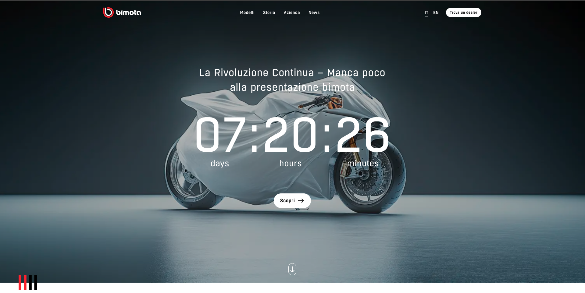
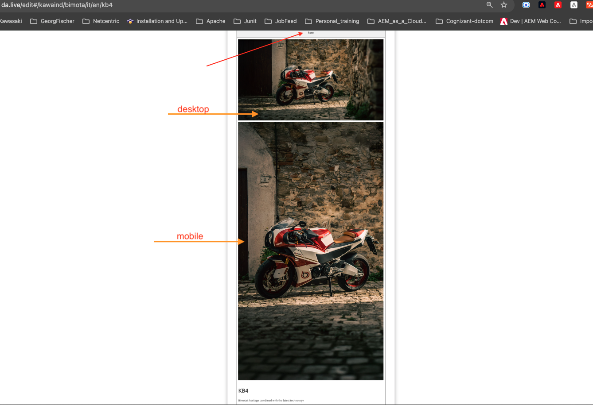

Hero
Home Page countdown banner, or a plain product-page hero image/video.
This component can be used on the Home Page, where you could display a countdown, or on any product pages where a specific product image or video can be added.
Countdown timer: date format
Mention the Time field only if this Hero is a countdown timer. The time must be in the format YYYY-MM-DDTHH:mm:ss.sssZ, where Z is the timezone offset — either the literal character Z (indicating UTC), or +/- followed by HH:mm, the offset in hours and minutes from UTC.
- Example — CET: to run a countdown till 09:00 AM CET on Nov 5, 2024, write
2024-11-05T09:00:00+01:00(CET is UTC+1, so+01:00is added). - Example — AEDT: Australia's AEDT is UTC+11. For a countdown to 09:00 AM AEDT on Oct 25, 2025, write
2025-10-24T22:00:00Z— because 09:00 AEDT on Oct 25 is 22:00 UTC on the previous day, Oct 24.
Adding the block
Use the Library section from the da.live toolbar and choose Hero from the list of available blocks.
Non-countdown use: a plain hero banner on a product page
If you just want a hero banner on a PDP (product detail page) and not a countdown, choose and paste an image compatible for desktop, then paste another image below it for mobile. Copy the 'Hero' block from an already-existing page instead of starting from scratch — for example, all Product pages use a Hero block, so any of them is a good source to copy from.
What you fill in
| Main content (required) | Should be an image. |
| Headline | Optional main heading text. |
| Subline | Optional supporting text under the headline. |
| Button | Optional link to go to a page with more info, e.g. "Scopri :arrow-right:" — the :arrow-right: token renders an arrow icon. |
| Time | Only include this field if the Hero is a countdown timer — see the timestamp format below. |

The countdown Hero rendered on the live page, with the days/hours/minutes timer and 'Scopri' button.

A plain (non-countdown) Hero banner on a product page, with separate desktop and mobile images.
Copy/paste snippet
| Hero | | |---|---| | <<add image here>> | | | La Rivoluzione Continua – Manca poco alla presentazione bimota | | | %TIME% | | | Scopri :arrow-right: | | | 2024-11-05T12:00:00Z | |